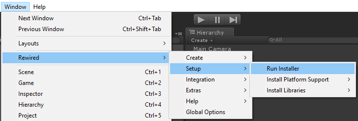

Installation
Rewired features an easy-to-use installer that will take you step-by-step through the installation process. The installer should run automatically after installing the Rewired package, but if it does not or you want to run it again at some point, you can launch the installer from the menu: Window -> Rewired -> Setup -> Run Installer

During installation, a number of things will happen:
- The Rewired.InputManager script will be added to the Script Execution Order and set to -32000 so it will run before any other scripts. This is very important and should not be changed.
- The Unity InputManager.asset file in YourProjectFolder/ProjectSettings will be appended with new settings that contain all the joystick and mouse buttons and axes needed by Rewired. This is required for platforms that make use of Unity's input system such as Webplayer, Android, iOS, etc. IMPORTANT: If you have already created custom entries in Unity's input manager, these entries will not be overwritten by Rewired, and your original InputManager.asset file will be backed up a location which will be shown in the installer window.
- A few files that contain necessary data for the Rewired editor will be created in Rewired/Data.
Once installation is complete you can start using Rewired. See Quick Start for a step-by-step guide to getting started.
Dependencies:
Windows:
Certain dependencies may need to be installed depending on the version of Windows and the selected input sources. See Deployment for details.
Direct Input on Unity 4.x (Unity 4.x ONLY -- this applies to no other version of Unity):
The free version of Unity 4.x does not support native plugins. A native plugin is required to use Direct Input (optional) as the primary input source on the Windows Standalone platform. If you want to use Direct Input, you will need to manually copy the DLL from Assets/Plugins/x86/Rewired_DirectInput.dll file into the root folder of your project (above the Assets folder). See Deployment for additional notes on steps required after making a build.
OSX:
For Xbox 360 controller support, install this driver (includes XBox One controller support).
SDL2:
If using SDL2 as an input source on any platform, the appropriate SDL2 library must be installed for both the editor and builds. It is likely you will need to include the SDL2 library in your final package also. See Deployment for details.
Setup for Special Platforms:
A few platforms require special setup steps in order to function. Please see Special Platform Support for details.